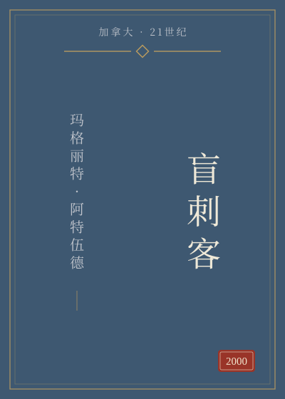
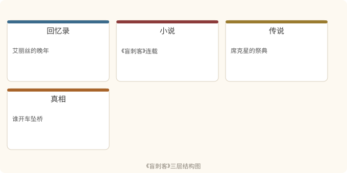

盲刺客
一、基本信息
| 作者 | 阿特伍德 |
|---|---|
| 成书/出版 | 2000年（作者页 B107 口径：盲刺客（2000）） Margaret Atwood — Encyclopaedia Britannica（百科全书） |
| 国别/地区 | 加拿大 |
| 时代 | 现当代 · 21世纪 |
| 体裁 | 长篇小说 |
| 语言 | 英语 |

《盲刺客》三层结构图（主题·结构图）
二、创作背景
作者页（B107）：阿特伍德 major_works 载'盲刺客（2000）'（B107 作者页定位，详见 shinv 条核对）。
获奖（通说待核）：2000年布克奖。
结构（通说待核）：三层嵌套——回忆录+小说《盲刺客》+科幻传说。
三、内容脉络
劳拉之死与艾丽丝的回忆：1930—40年代加拿大的家族秘史（通说待核）。
'盲刺客'科幻传说：席克星上的 sacrifice（通说待核）。
四、主要人物表
| 人物 | 身份 | 说明 |
|---|---|---|
| 艾丽丝 | 姐姐 | 回忆者（通说待核） |
| 劳拉 | 妹妹 | 车祸身亡（通说待核） |
五、主题与艺术特点
- 三层嵌套的叙事迷宫（通说）。
- 女性记忆的修正（通说）。
- '盲刺客'的隐喻（通说待核）。
六、影响与评论
- 作者页：阿特伍德代表作（B107 作者页口径）。
Margaret Atwood — Encyclopaedia Britannica（百科全书） - 2000年布克奖（通说待核）。
Margaret Atwood — Encyclopaedia Britannica（百科全书）
七、阅读建议
难点
- 三层嵌套。
- 加拿大历史（战时）。
- 《盲刺客》（译林出版社，通说待核）。
- 英文原版。
先《使女的故事》后本作。
八、待核实
- 2000年布克奖核对。
- 艾丽丝/劳拉人名核对。
- 科幻传说的星球设定待核。
本页主要来源
阿特伍德的其他收录作品：使女的故事